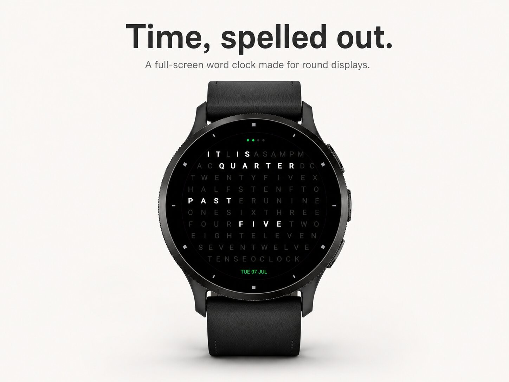
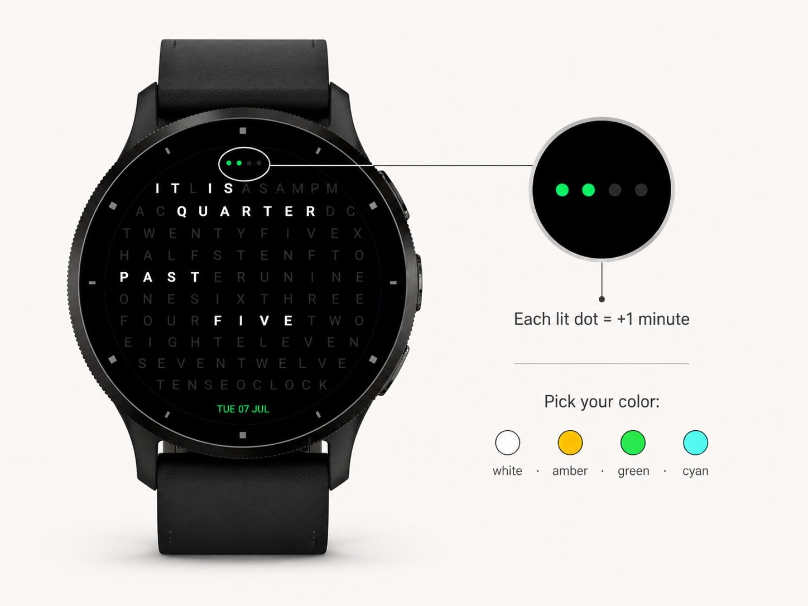

Watch faces · Watch face
The time in words, in ten languages.


Wordclock — Time in Words
Tell the time the human way.
Stop reading numbers. Start reading time.
Most watch faces shout data at you — digits, dials, decimals. Wordclock does the opposite. It turns your watch into a calm, quiet sentence that spells the time out in plain language, just like a person would say it out loud: IT IS TEN PAST ELEVEN. No mental math, no squinting at tiny numbers. You simply glance down and read the time.
A word clock reimagined for round screens
Classic word clocks live on square wall displays. Wordclock is built from the ground up for the round watch on your wrist. The letters fan out in a full circle that reaches edge to edge, filling the entire screen with a beautiful ring of type. Only the words that make up the current time light up; every other letter fades softly into the black, hinting at the grid without ever distracting you. The result is a face that feels less like a gadget and more like a piece of typographic art.
Down to the minute
A word clock rounds to the nearest five minutes — but Wordclock never leaves you guessing. Four small dots along the top quietly count the extra one to four minutes, so you always have the exact time at a glance, not just an approximation. It's the little detail that makes it a clock you can actually rely on.
Born for AMOLED
Wordclock is designed for modern AMOLED watches. The deep, true-black background makes the glowing words pop with contrast and looks absolutely stunning on your wrist — while keeping the pixel count low and your battery happy. Every element is drawn crisply and scales perfectly across watch sizes.
Truly yours
Your watch, your rules. Wordclock is built to be customized right from the Connect IQ app — no fiddling required:
Mix and match until it feels like it was made just for you.
Simple on the surface, thoughtful underneath
No clutter. No noise. No endless menus. Just a clean, legible, endlessly readable face that does one thing beautifully: it tells you the time in words. Whether you want a stark, blacked-out minimalist look or a warm amber glow with the full letter grid showing, Wordclock quietly fits into your day.
Give your watch a face with something to say.
Wordclock — the human way to read time.